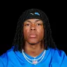

The Keep
Superflex dynasty
Top 10 · 40 boards · November 20, 2026
Full board- 1
 12,000
12,000 - 2
 10,873
10,873 - 3

10,228 - 4
 9,769
9,769 - 5
 9,409
9,409 - 6
 9,111
9,111 - 7
 8,855
8,855 - 88,629
- 98,426
- 10
 8,241
8,241
BALL KEEP
Superflex · PPR · Sleeper
Superflex dynasty
Updated November 20, 2026
The Keep
Top 10 · 40 boards · November 20, 2026
Full board
10,228The Board
Top 10 · 40 boards
Full boardWeek 11
Live data only.
News
Tetairoa McMillan Remains idle with foot injury
The Bears' final injury report ahead of Sunday's game against the Saints brought good news on both sides of the ball.
Lamar Jackson to undergo thumb surgery and will be placed on IR | 'The NFL Report'
Rams WR Puka Nacua Underwent MCL Surgery, Could Miss Rest Of Season
Jones just completed his sixth straight game with an interception, the longest streak by a Colts player since Curtis Painter in 2011
Brown has already missed multiple games this season and is now expected to miss at least the next few contests
5 quarterback-needy teams could pursue Daniel Jones after his surprise release, but one contract detail changes everything
Bhayshul Tuten gets notable injury downgrade before Jaguars/Giants game
Today · Week 11
Drake Maye (Out), Omar Cooper Jr. (Out), Sam Darnold (Out), Jordan Addison (Out)